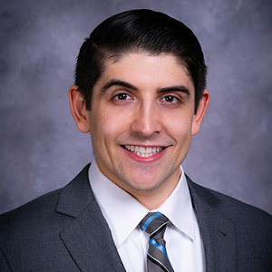

Movement Disorders Fellow at Northwestern University Feinberg School of Medicine. Committed to advancing neurology education through innovative curriculum design, mentorship, and scholarly inquiry.
A foundation built across leading academic medical institutions, from bench to bedside to classroom.
Two-year training in educational theory, scholarly project development, and educator portfolio.
Minors: Public Health, Chemistry, Mathematics · Summa Cum Laude · Phi Beta Kappa
Department of Neurology, Boston, MA